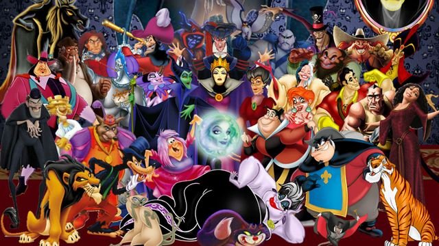

| |
|
|
|||
|---|---|---|---|---|---|
| |
|
|
|||
|---|---|---|---|---|---|
The Walt Disney Company, conhecida simplesmente como Disney, é uma companhia multinacional estadunidense de mídia de massa sediada no Walt Disney Studios, em Burbank, Califórnia
A absorção das propriedades Fox pela Disney sofreu um impasse no Brasil. O travamento se deu por conta do Cade (Conselho Administrativo de Defesa Econômica), que impôs a exigência de uma manutenção dos canais esportivos da Fox Sports, visto que a Disney já possui a ESPN Brasil. Ao que parece, o trâmite foi resolvido após a decisão de que a Disney venderá os canais Fox Sports no Brasil.
Caso a Disney absorvesse estes canais, ela teria um monopólio das emissoras televisivas de esporte nacionais. Este monopólio em questão configurou uma irregularidade aos olhos do Cade, o que acabou atrasando a conclusão do acordo de junção entre Fox-Disney. Os ativos do canal Fox Sports serão vendidos de forma integral. A compra em partes está fora do reino das possibilidades. Entre tais ativos, estão alguns direitos valiosos de transmissão, como a Libertadores. Segundo o Deadline, a decisão da Disney em ceder às concessões agradou o Cade, que deve liberar o acordo em breve. Após a aprovação deste órgão, um período de 10 dias se iniciará para resolução do contrato.
O Disney+ está vindo com a promessa de várias séries e conteúdos originais do estúdio. Entre as novidades, teremos Star Wars, Marvel e até mesmo live-actions de animações clássicas da Disney, como A Dama e o Vagabundo. E agora, para o deleite dos fãs, teremos também uma série focada nos Vilões da Disney.
A informação veio da Production Weekly, um site que sempre está antenado nas mais diversas produções de Hollywood. De acordo com eles, Steve Pearlman (Once Upon a Time) e Michael Seitzman (Quantico). A produção deve começar no segundo semestre de 2020.
Ainda não temos informações a respeito de quais personagens estarão na série nem temos detalhes a respeito da trama. Outra dúvida deixada no ar é se a produção será uma série animada ou se será algo em live-action – o que é mais provável, considerando os produtores envolvidos. Com sorte, ouviremos mais detalhes em breve.